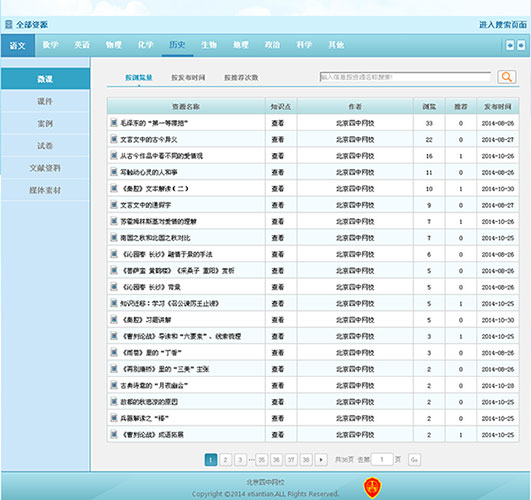
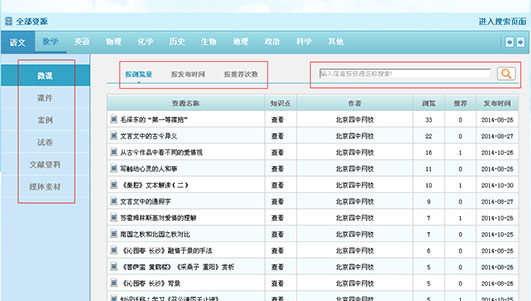

一、查询全部资源
用户进入资源精简版系统，打开如下全部资源的查看页面，提供所有学科资源的查询。页面详细功能介绍如下：

1、资源分类查询
查询资源时，可按照资源类型、排序查询、精确搜索等方式进行查询。
·资源类型：学科下资源按文件类型不同分为微课、媒体素材、试卷、课件、案例、文献资料六类。
·资源列表排序方式：按浏览量、按发布时间、按推荐次数。
·精确搜索：在搜索输入框中输入资源相关的关键字进行精确查询。

2、资源详情
在查询列表中，点击资源名称，查看资源详情。
详情页面提供资源的点赞、推荐、收藏、下载等操作，并有相关资源的推荐。
二、进入搜索页面
在首页点击右上角功能链接“进入搜索页面”，直接进入资源查询功能。搜索页面包含①按资源搜索 ②高级搜索 ③按知识点搜索 三种查询方法。
1、按资源搜索
操作步骤：首页>进入搜索页面>按资源搜索
切换标签至“按资源搜索”在查询条件区域选择要查询的学科、资源关键字信息后进行查询。
2、高级搜索
操作步骤：首页>进入搜索页面>按资源搜索>高级搜索
按资源搜索页面，点击“高级搜索”
进入高级搜索页面后，可以详细根据如下查询条件进行资源定位，
伴随查询条件的完整，系统会精确筛选查询结果，也可直接输入资源关键字进行查询。
3、按知识点搜索
操作步骤：首页>进入搜索页面>按知识点搜索
在条件选择区，根据需要选定学科、年级、知识点名称来进行详细查询。